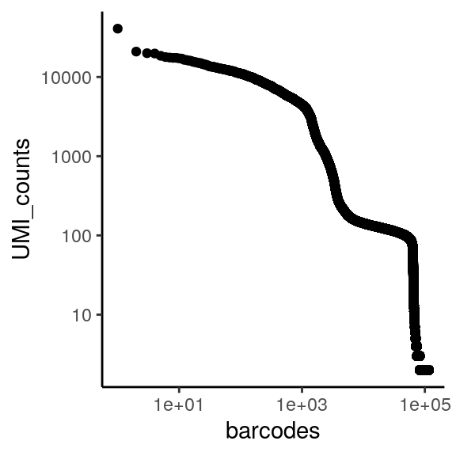

intro to RBI
RC1 South room9101
office hours on Thursday afternoons
outline of the workshop
- Prereq: check all required packages are installed
- Day 1 (pm):
- Say Hi
- Intro to scRNAseq
- Data preprocessing
- Import into R
- Quality control
- Day 2 (am):
- Projections
- Clustering
- Finding markers
- Annotating cell types
- Day 2 (pm):
- Pseudotime analysis
- Dataset alignment
- Day 3 (am):
- Multimodal data (CITE-seq, hashing)
- Miscellaneous
- Day 3 (pm) : working through your own data
- Survey after the workshop for feedback
limitations of scRNAseq
dropout effect, only a small portion of the mRNAs from each cell is captured (see: GFP and other supposed markers)
low number of detectable genes, might not detect low expressing genes at all (see: TFs)
little info outside of gene counts (see: no tail-seq, isoform info)
discrepancies between RNA and protein, especially surface proteins (see: CD4+ vs CD8+)
constantly evolving chemistry and bioinformatics tools (see: 10x v2/v3/v3.1, bad cell calling in cellrangerV2)
experimental design >> informatics corrections
too few or too many cells - 1000 cell lower limit for capture, and waste of money
doublets - 10000 cells ~ 10% doublet rate
(try: scrublet)cell death - worse RNA capture, potentially different expression profile
(try: MT-RNA cutoff, regress out MT-RNA score)lysed/free RNA - background for all cells, interferes with clustering and markers
(try: SoupX)
different sex of mice in samples - makes sample comparisons harder
(try: ignore known sex-dependent genes)batch effects - still preferable to have all, or at least the direct comparison samples, captured at the same time
(try: various alignment methods)n = ? - no consensus in the field, but aggregating 2 or more biological repeats, or hash multiple samples at the same time, should be valid
single cell RNA sequencing overview
cell suspension -> cDNA library -> fastq file -> gene expression matrix ->
filtering -> preprocessing -> dimension reduction -> clustering -> identity and markers -> pseudotime
1. sequencing methods
main platforms: 10x vs Smart-seq2 vs sci-RNA-seq3
| method | cell isolation | coverage | saturation read # | gene detection | throughput and cost |
|---|---|---|---|---|---|
| 10x Chromium | droplet-based | polyA+ 3’ only | 10^5 per cell | ~2000 per cell | ~5k cells, low cost |
| Smart-seq2 | FACS-sorted | full length | 10^6 per cell | ~4000 per cell | manual pipetting, high cost |
| sci-RNA-seq3 | combinatorial index | polyA+ 3’ only | 10^5 per cell | ~1000 per cell | ~1m cells, lowest cost per |
variations within 10x system: standard 3’, 5’ + V(D)J, antibody hashing, CITE-seq, variant-calling (very different sample preps, may require up to 4 library preps per sample)
2. alignment pipelines
cellranger performs alignment, filtering, UMI counting, clustering, and gene expression analysis.
Alternatives such as Alevin, STARsolo, Kallisto
# in terminal
cellranger count --id=123 \
--transcriptome=/refdata-cellranger-GRCh38-3.0.0 \
# build new transcriptome if you have GFP/RFP/transgene
--fastqs=/home/runs/HAT7ADXX/outs/fastq_path \
# a list of fastqs, a folder, or pass table via csv file
--sample=mysample
# will need additional arguments for feature barcodingoutput folder structure
KO_1_CDNA
|-- KO_1_CDNA.mri.tgz
|-- SC_RNA_COUNTER_CS
| |-- CLOUPE_PREPROCESS
| |-- EXPAND_SAMPLE_DEF
| |-- SC_RNA_COUNTER
| `-- fork0
|-- _cmdline
|-- _filelist
|-- _finalstate
|-- _invocation
|-- _jobmode
|-- _log
|-- _mrosource
|-- _perf
|-- _sitecheck
|-- _tags
|-- _timestamp
|-- _uuid
|-- _vdrkill
|-- _versions
`-- outs
|-- analysis
|-- cloupe.cloupe # cloupe file for browser view
|-- filtered_feature_bc_matrix # use this fold for seurat
|-- filtered_feature_bc_matrix.h5
|-- metrics_summary.csv
|-- molecule_info.h5
|-- possorted_genome_bam.bam
|-- possorted_genome_bam.bam.bai
|-- raw_feature_bc_matrix # or this for seurat
|-- raw_feature_bc_matrix.h5
`-- web_summary.html # qc summary~ 5-8 hours per sample on biochem department cluster “Bodhi”
theoretically can be ran locally on linux, but will require at least 32GB of RAM
other campus options include Rosalind, AWS
cellranger output html and loupe files
3. key things to check for in the initial output html report
- number of cells close to expectations? reasonable elbow plot?
- reads per cell (this is merely calculated as reads/cells, so somewhat inaccurate) - ideally ~50-100k
- genes per cell, ideally ~2000
- sequencing saturation?
- any structure in the dimension reduction tSNE?
4. downstream processing in R or python
- more accurate cell calling
- more stringent filtering
- regress out unwanted sources of variance
- appropriate choice of normalization method
- UMAP instead of tSNE projections, and fine-tuning
- fine-tuning of dataset alignment methods and parameters (by default cellranger does align during aggregation)
- find marker genes and assign cluster identities (may merge some)
- more flexible visualizations
- GO term analysis and other things
- export to a hosted browser, similar to cloupe
reading and making UMI-barcode elbow plots

The total UMI (unique molecular identifier - represent each transcript) of a cell barcode is used to rank the barcodes determine the UMI threshold for signal vs noise. A plot is generated for cellranger html output, but will also be useful in other situations like hashing and CITE-seq.
for a standard 10x scRNAseq run:
expected range of x axis (barcode) : ~ 10^5 (if using ggplot to visualize, filter)
expected inflection point of x axis (cell number): ~ # of loaded cells / 2
expected range of y axis (UMI_counts) : ~ 10^4
expected inflection point of y axis (cutoff UMI count): ~ 1000
library(tidyverse)
# use "raw" instead of "filtered" cellranger output folder
data_url = "https://scrnaseq-workshop.s3-us-west-2.amazonaws.com"
m1 <- readRDS(url(file.path(data_url, "raw_matrix.rds")))
# all genes x all barcodes
counts <- Matrix::colSums(m1) # calculate total UMI read number for each cell barcode
countdf <- as.data.frame(counts) %>%
as_tibble(rownames = "barcode") %>%
filter(counts >= 2) %>% # throw out cell barcodes with 1 or less UMI, this is mainly for time purposes
arrange(desc(counts)) %>% # arrange by descending order
mutate(rank = 1:n()) # rank
head(countdf) # barcodes now ranked by UMI counts
#> # A tibble: 6 x 3
#> barcode counts rank
#> <chr> <dbl> <int>
#> 1 GCAGCCACATACCGTA 40745 1
#> 2 ATGGAGGGTGGTAACG 20916 2
#> 3 GTAACCATCGCTTGAA 19958 3
#> 4 TTCATGTGTCGTGTTA 19765 4
#> 5 GAATAGACATCCTGTC 18494 5
#> 6 GTCTCACGTTGGCCGT 17828 6
ggplot(countdf, aes(x = rank, y = counts)) +
geom_point() +
labs(x = "barcodes", y = "UMI_counts") +
theme_classic() +
scale_x_log10() +
scale_y_log10()
briefly, tidyverse/dplyr verbs
The tidyverse is a collection of R packages designed for data science. All packages share design philosophy, grammar, and data structures.
Seurat also uses some of the grammar, such as group.by.
A large amount of code introduced in this workshop in based on matrix and dataframe manipulation. Therefore some basic understanding of tidyverse/dplyr will be helpful.
Also, “%>%” is used as “pipe”, similar to unix |.
# we will look at metadata from pbmc_small from Seurat
library(Seurat)
library(tidyverse)
# note that tidyverse is philosophically against rownames
meta <- pbmc_small@meta.data %>% as_tibble(rownames = "cell_id")
meta %>% head() %>% print() # <- same as print(head(meta))
#> # A tibble: 6 x 8
#> cell_id orig.ident nCount_RNA nFeature_RNA RNA_snn_res.0.8
#> <chr> <fct> <dbl> <int> <fct>
#> 1 ATGCCA… SeuratPro… 70 47 0
#> 2 CATGGC… SeuratPro… 85 52 0
#> 3 GAACCT… SeuratPro… 87 50 1
#> 4 TGACTG… SeuratPro… 127 56 0
#> 5 AGTCAG… SeuratPro… 173 53 0
#> 6 TCTGAT… SeuratPro… 70 48 0
#> # … with 3 more variables: letter.idents <fct>, groups <chr>,
#> # RNA_snn_res.1 <fct>
# "select" certain columns of data
meta2 <- meta %>% select(cell_id,
nCount_RNA,
RNA_snn_res.0.8,
letter.idents)
meta2 %>% head() %>% print()
#> # A tibble: 6 x 4
#> cell_id nCount_RNA RNA_snn_res.0.8 letter.idents
#> <chr> <dbl> <fct> <fct>
#> 1 ATGCCAGAACGACT 70 0 A
#> 2 CATGGCCTGTGCAT 85 0 A
#> 3 GAACCTGATGAACC 87 1 B
#> 4 TGACTGGATTCTCA 127 0 A
#> 5 AGTCAGACTGCACA 173 0 A
#> 6 TCTGATACACGTGT 70 0 A
# "filter" data to select specific rows
meta2 %>% filter(nCount_RNA >= 71,
letter.idents == "A") %>%
head() %>%
print()
#> # A tibble: 6 x 4
#> cell_id nCount_RNA RNA_snn_res.0.8 letter.idents
#> <chr> <dbl> <fct> <fct>
#> 1 CATGGCCTGTGCAT 85 0 A
#> 2 TGACTGGATTCTCA 127 0 A
#> 3 AGTCAGACTGCACA 173 0 A
#> 4 GCAGCTCTGTTTCT 72 0 A
#> 5 AATGTTGACAGTCA 100 0 A
#> 6 AGAGATGATCTCGC 191 0 A
# "arrange" the rows of your data into an order
meta2 %>% arrange(nCount_RNA) %>%
head() %>%
print()
#> # A tibble: 6 x 4
#> cell_id nCount_RNA RNA_snn_res.0.8 letter.idents
#> <chr> <dbl> <fct> <fct>
#> 1 CTTCATGACCGAAT 41 0 A
#> 2 CATGAGACACGGGA 51 0 A
#> 3 GATATAACACGCAT 52 0 A
#> 4 AGGTCATGAGTGTC 62 0 A
#> 5 TGGTATCTAAACAG 64 0 A
#> 6 GTAAGCACTCATTC 67 0 A
# "mutate" your data frame to contain new columns
meta3 <- meta2 %>% mutate(seurat_clusters = str_c("cluster_", letter.idents),
nCount_RNA_norm = nCount_RNA/max(nCount_RNA))
meta3 %>% head() %>% print()
#> # A tibble: 6 x 6
#> cell_id nCount_RNA RNA_snn_res.0.8 letter.idents seurat_clusters
#> <chr> <dbl> <fct> <fct> <chr>
#> 1 ATGCCA… 70 0 A cluster_A
#> 2 CATGGC… 85 0 A cluster_A
#> 3 GAACCT… 87 1 B cluster_B
#> 4 TGACTG… 127 0 A cluster_A
#> 5 AGTCAG… 173 0 A cluster_A
#> 6 TCTGAT… 70 0 A cluster_A
#> # … with 1 more variable: nCount_RNA_norm <dbl>
# "summarise" chunks of you data (by group) in some way.
meta3 %>% group_by(seurat_clusters) %>%
summarise(n = n())
#> # A tibble: 2 x 2
#> seurat_clusters n
#> <chr> <int>
#> 1 cluster_A 53
#> 2 cluster_B 27